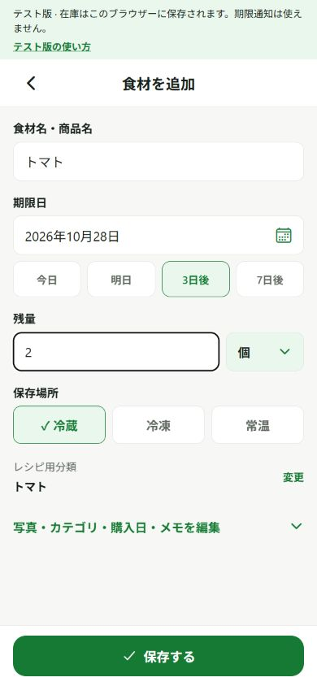
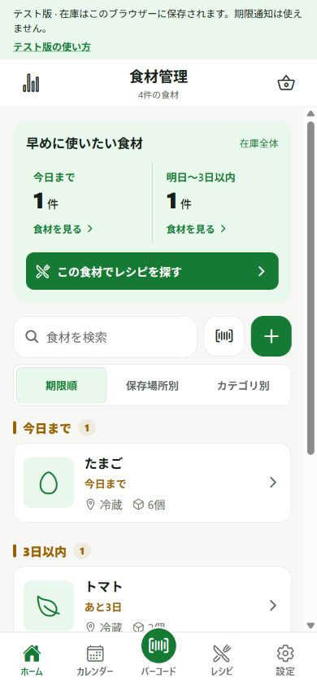
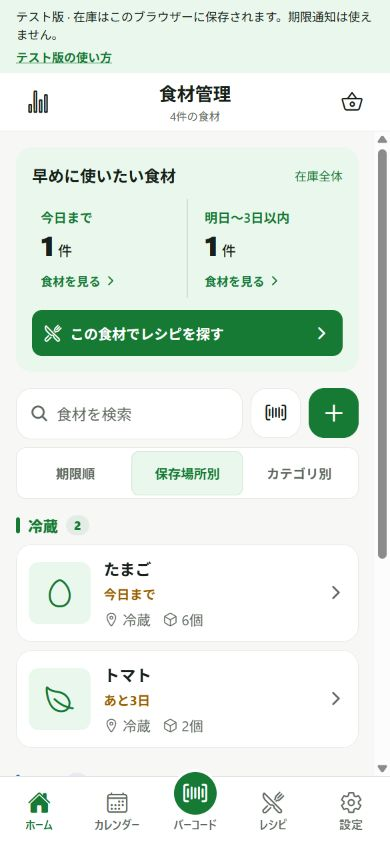
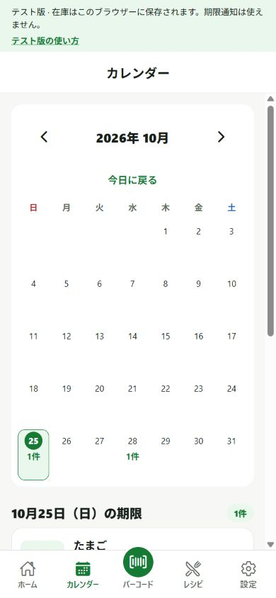
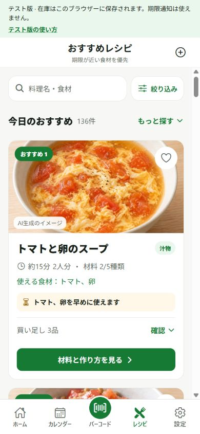

気づけば、期限切れ。
冷蔵庫の奥にしまった食材を、
すっかり忘れていた。
食材の期限・在庫管理アプリ
冷蔵庫の中身も、食材の期限も。
たべどき！！で、かんたん管理。
「何がある？」がわかると、
今日のごはんも、次の買い物も変わっていく。
食材をムダにしない、
毎日をもっと便利に。


こんなこと、ありませんか？
毎日の小さな「うっかり」を、
ひとつずつ減らしていこう。
冷蔵庫の奥にしまった食材を、
すっかり忘れていた。
まだ家にあるのに、
買い物かごへ入れてしまう。
買い物中に思い出せず、
献立も決められない。
一つずつ手に取って、
期限を確かめるのは大変。
冷蔵庫を開ける前に、
たべどき！！を開こう。
たべどき！！の特徴
買ったあとから、使いきるところまで。
食材管理を、いつもの暮らしに。

01食材・在庫の管理
食材名、写真、残量、メモをひとつに。
家にあるものを、買い物の前にも確認できます。
冷蔵・冷凍・常温で切り替えて、探したい食材を見つけやすく。
食材が増えても、必要な情報へすぐにたどり着けます。

02期限の確認・通知
今日までの食材、3日以内に期限がくる食材。
ひと目で確認して、今日使うものを決めましょう。
日付から食材を確認。数日先の食べどきも見渡せます。
通知するタイミングを設定できます。アプリとiPhoneで通知を許可する必要があります。
03かんたん登録
すべてを細かく入力しなくても大丈夫。
食材名と期限から、あなたのペースで始められます。
見つからない商品は手入力で。商品名検索にはインターネット接続が必要です。
前の登録内容を利用して入力を短縮。期限は今回のパッケージを確認してください。
紹介しているのは現在の開発版の機能です。画面・仕様は公開時に変更になる場合があります。通知の実画面はWeb版には含まれません。
はじめての使い方
まずは今日買ったものをひとつ。
無理なく、少しずつ始めましょう。
名前・期限・残量・保存場所を確認して保存。写真やメモも付けられます。
買い物から帰ったらホームやカレンダーを開いて確認。期限の近い食材から、今日使うものを選びます。
料理や買い物の前に使ったら残量を更新。使いきった食材を記録して、次の買い物につなげましょう。
食べ終わったらアプリ画面
横にスクロールして、実際の画面をご覧ください。
先に使いたい食材から確認。
名前から保存まで、ひとつの画面で。
ひと月の期限を、見渡せる。
探したい場所で、すっきり整理。
ある食材を、今日のごはんへ。

開発中のWeb版を撮影した画面です。食材データは撮影用のサンプルで、日付・数量は例です。レシピの料理画像はAI生成のイメージです。
初回公開のiPhone版は、無料・広告なしで提供する予定です。配信開始時の案内は、このサイトとApp Storeでお知らせします。
バーコードで検索するのは商品名などの商品情報です。今回買った商品の期限・残量・保存場所は、パッケージや実際の状態を確認して登録してください。見つからない商品も手入力で登録できます。
アプリとiPhoneの両方で、通知の設定を確認してください。通知は食材の管理を助けるもので、食品の安全性を判定するものではありません。期限や保存状態はご自身でも確認してください。
個人の在庫・期限・数量・メモ・写真を、ほかの利用者に公開する機能ではありません。商品共有機能を利用する場合も、同意して送信した商品名やバーコードなどの商品情報が対象です。
データは利用している端末に保存し、別端末との自動同期はありません。機種変更やアプリの削除前には、アプリの設定からバックアップを書き出し、新しい端末で復元してください。
たべどき！！と、これから。
今日の食材を、明日の「しまった」にしない。
あなたの食べどきを、たべどき！！で。
使い方のご質問、不具合のご報告、ご意見を受け付けています。